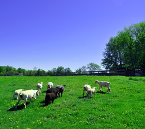

All about
Fostering Ducklings and Bunnies
Fostering Ducklings and Bunnies

About Woolley Wonderland Farm
We bought the farm! Our City-Mouse to Country-Mouse adventure began last millennium when Karen & Glenn shed the Toronto lifestyle. Drawn to Peterborough, and with a last name like Woolley, our new address proved to be a rural property in the Hamlet of Lakehurst, of just under 40 acres.
We didn't know anything about farming but were welcomed by the local Reeve (country version of a Mayor) who helped us learn the ropes, fences and other basics. We celebrated the arrival of the year 2000 living on our new homestead.
That Woolley name made us contemplate livestock and, you guessed it, sheep were the first critters that appeared on our farm.
Funny Story: we went to a local farm to select our first sheep. These lovely, wooly critters were sweet and kind. After paying for them and agreeing for drop off, a few days later they arrived. We were gobsmacked as these skinny things jumped from the truck. Goats! We thought. Little had we known that the farmer had arranged to shear them and the wooley coats were gone with the summer, slim shapes of our new sheep. We knew so little and we never laugh at questions posed to us, for reasons like this learning experience we giggle over today.
Some black banty hens that laid blue eggs came next, along with Muscovy ducks that liked to sheep surf in the winter. The Reeve kept a few cattle on our land and hayed our fields. The house is a classic 1860's wood, Ontario farm house with 4 rooms up and 4 down, although converted over the years for various uses. The large summer kitchen off the back had to be removed and was replaced. Somehow the improvements never end. Over 30 of our dear friends and family helped us Raise The Roof of our addition in 2000 and we're forever grateful. 
Our barn was created in two parts with the original section built in 1869 and the addition in 1912. With hay storage upstairs and livestock down, we have reconfigured the use over the last 20 years as our needs shifted. We added running water and gravity hydrants, nursing pens and Critter Visit storage. Our purebred hens are caged for egg collection and the equines have unique stalls for miniature sized ponies or donks.
Arrival of the dream! After a decade of marriage, Karen and Glenn welcomed Miss Fiona on a cold March morning in 2002. Celebrated by all extended family she created a new heart to our farm. She was fearless from the start and loved her lambs almost as much as the cats.
The animals have come and gone from borrowed donkeys that we hoped would munch down all our tall thistles (nope), to mini goats to do the same, (they are supposed to eat everything! – Nope). Our doggos kept us safe and prowled the property. We've raised turkeys, quail, chickens and ducks. Llamas birthed an unexpected cria (baby) one September day to the delight of a visiting relative from England. Lambs and sheep have been a constant over the decades as we tried large and small breeds. We were mentored by Bob and Gail Irwin of Rocky Lane farms and shed a few tears when we hear of his passing.
Our sheep shearing went from just another day to a school trip for Fiona's grade 1 and 2 years. We had over 300 kiddos and families on the farm before we discovered that bringing animals to the schools allowed more students enjoying the farm experience. We continue to have friends over each spring as the wooly coats come off the sheep and alpacas.

Critter Visits Needing a name for this new segment, Karen created the Critter Visits brand, marketing strategy and social media presence. We've travelled to North Bay, Kingston and London to visit homes, schools, hospitals, senior and retirement residences. From newborn to 102nd birthdays – our mini farm animals have celebrated milestones all over Ontario.
Celebrations from a Christening, a Wedding, all the Holidays, Birthdays, our own 25th Wedding Anniversary and two Graduations – we know to mark the moments at Woolley Wonderland farm. Our extended families gather as often as they can, with friends popping by for tea as well. We stay pretty close to home with some international trips to SCUBA dive when the chill of winter requires a warm break.

What's Next? While we plan for the future, we prefer to live in the moment. We're simplifying, as we activate our farm retirement plan and find the perfect staff to help us along. Critter Visits plus our on-farm winter activities keep daily life busy. Fiona continues to investigate her post-secondary options to find a good career move without pressure. Karen leads the paperwork, marketing and creative efforts while Glenn gets the fresh air and chores as his routine.
Be the stewards for the land God has placed in our care. Be leaders in the community. Be a beacon of hope and safety. Be a family down on the farm.
© Critter Visits of Woolley Wonderland Farm Inc. 2020